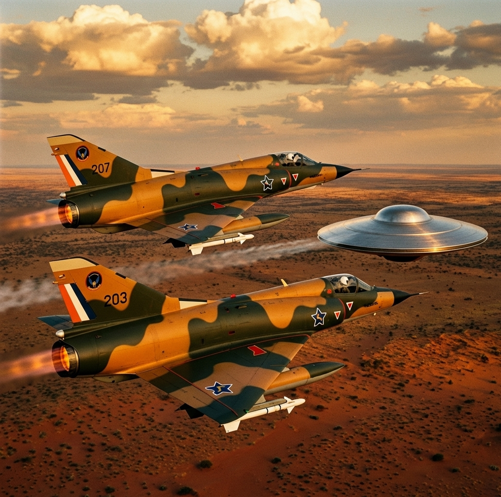
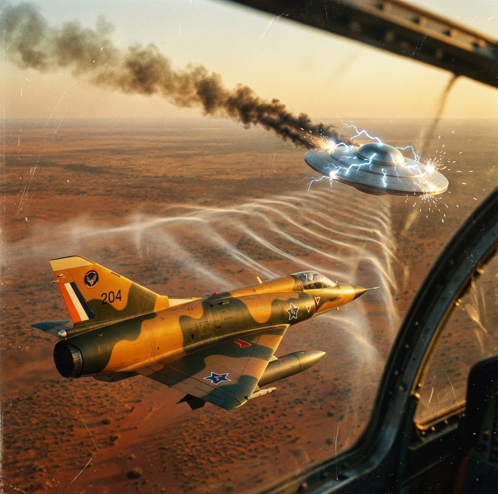
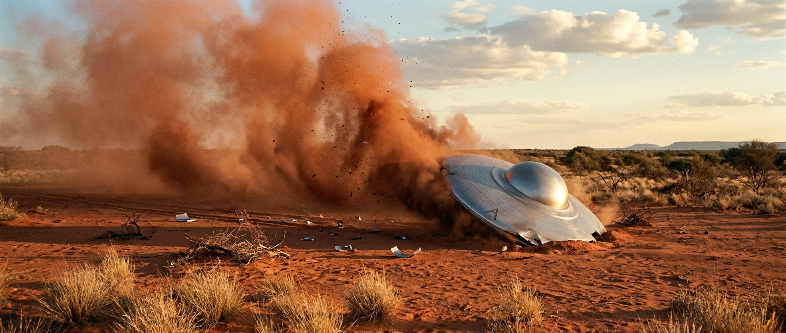
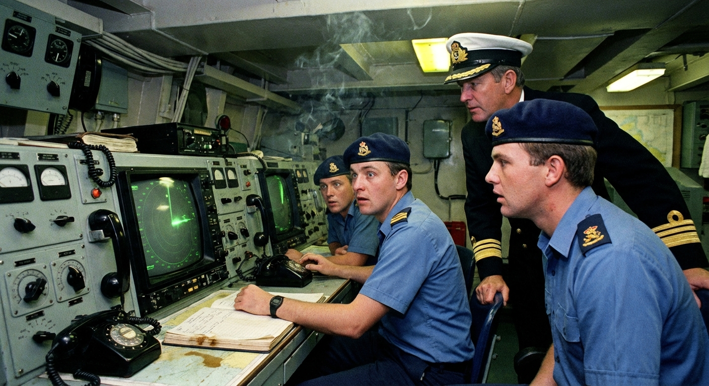
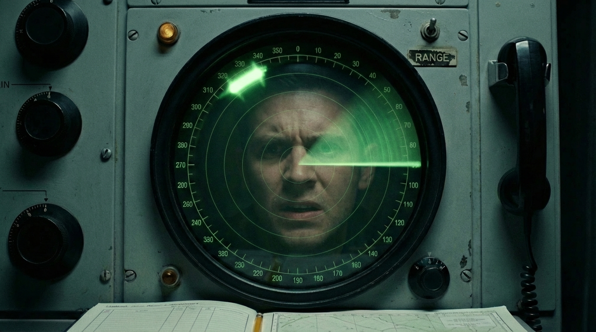
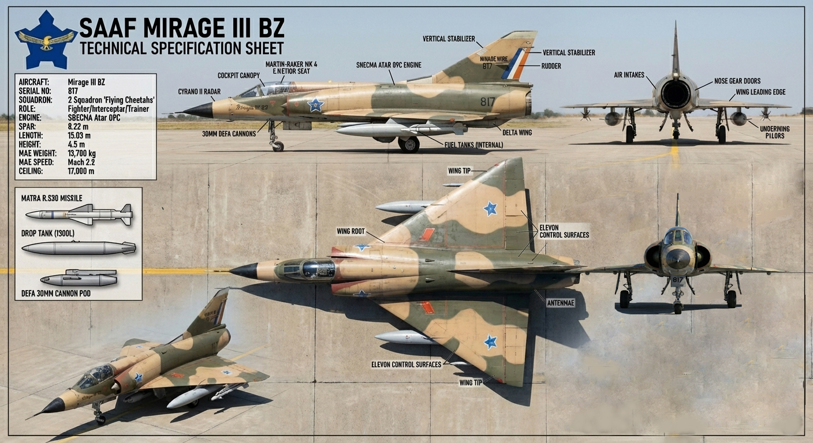

Sometime in the early 1990s, a fax arrived at a small office in Batley, West Yorkshire. Five pages. Each one carried the crest of the South African Air Force and the words Classified Top Secret — Do Not Divulge. The date on the document was 7 May 1989.
It described the tracking, interception, and shooting down of an unidentified flying object over the Kalahari Desert by the South African military, the recovery of a crashed disc from a crater of fused sand, and the removal of two non-human beings from inside. One dead. One alive.
The office belonged to Quest International, a civilian UFO research magazine that ran out of the Yorkshire UFO Society. The man who opened the fax was Tony Dodd, a retired North Yorkshire police sergeant. Thirty years in the constabulary. Methodical. Sceptical. No patience for fantasists.
In the small and regularly mocked world of British ufology, Dodd was one of the few people who actually knew how to run an investigation.
He nearly threw it in the bin.
Do Not Divulge
Department of Air Force Intelligence
South African Air Force
Classification: Top Secret
Date: 7 May 1989
Re: Tracking and recovery of unidentified aerial craft,
Kalahari test range, Northern Cape Province
7 May 1989 — Afternoon
The Tracking
The document said that on the afternoon of 7 May 1989, a South African Navy frigate called the SAS Tafelberg picked up an unidentified contact on radar doing roughly 5,746 nautical miles per hour. Ground radar confirmed the track.
Scramble Order
The Intercept
Two Mirage III fighters were scrambled. The pilots reported a solid metallic disc, about fifteen metres across, no visible propulsion, no markings, no response on any radio frequency.
The disc was hit — it lost stability and dropped altitude

Two SAAF Mirage IIIs intercept the unidentified disc over the Kalahari — 7 May 1989

Thor 2 experimental weapon engages the craft — the disc trails smoke and sparks
An order came through to engage it with an experimental weapon called Thor 2.
The disc was hit. It lost stability, dropped altitude, crossed into Botswana, and went down about eighty kilometres from the South African border.
The disc descending over the Kalahari — crash site approximately 80km from the South African border
A joint South African–American operation, codenamed Silver Diamond, recovered the object from a large crater. The sand around it had turned to glass. A single telescopic landing leg stuck out from the underside, as if a landing sequence had started and never finished.

Operation Silver Diamond — the crash site in the Kalahari
• • •
The first recovery helicopter to reach the site overflew the object at five hundred feet. It stalled mid-air and crashed. Five crew died.
That helicopter is worth pausing on.
No publicly accessible South African military record documents a five-fatality helicopter crash in 1989. The SADF Roll of Honour for that year lists around thirty-three names, including four Air Force members, but no matching incident.
SADF operations — no matching five-fatality helicopter crash appears in the 1989 Roll of Honour
But there is a reason the Roll of Honour may be the wrong place to look.
A recovery mission sent to retrieve an unknown object from a nuclear weapons testing area would not have carried five soldiers. It would have carried specialists — Armscor weapons engineers, Kentron technicians, scientists from the CSIR. Civilians. Civilians do not appear on military rolls of honour. Their deaths are recorded differently, or in some cases, not recorded at all.
The known Puma losses during the Border War typically involved three crew. Five matches the complement of a Puma configured for a specialist recovery operation: pilot, co-pilot, flight engineer, and two additional personnel in the back.
The SADF had form for making casualties disappear from the record. During Operation Savannah in Angola, forty-nine dead were classified as missing rather than killed in action, a decision that eventually reached the Supreme Court. Anything that happened near Vastrap — the nuclear weapons test range sitting in the same stretch of desert — would have been buried regardless of what caused it.
The gap in the record does not prove the crash happened. But it does not disprove it either.
According to the document, the disc and its occupants were moved to AFB Swartkop, a real air force base in the Pretoria suburb of Centurion, referred to in the papers as Valhalla. From there they were allegedly shipped to Wright-Patterson Air Force Base in Ohio.

The Inquiry Begins
The Investigation
On the face of it, the whole thing was absurd. Crashed saucers. Alien bodies. A secret joint operation with the Americans. All coming out of a country that most of the world had spent years trying to isolate and discredit.
Nobody serious would go near it. Dodd almost didn't.
But the document nagged at him. The SAS Tafelberg was a real ship. AFB Swartkop was a real base. The Department of Air Force Intelligence, stamped across the header, was a real division of South African military intelligence. The classification terminology, the unit designations, the structure of the report — all of it tracked with how the South African military actually produced paperwork.
Whoever wrote this knew the system from the inside.
And it had fourteen spelling mistakes. Fourteen. In what claimed to be a classified military intelligence report from a government that had built six nuclear weapons under sanctions, developed an indigenous attack helicopter, and designed the mine-protected vehicle that the Americans would copy two decades later for their war in Iraq.
That government did not send out top-secret documents with fourteen typos.
Dodd picked up the phone. He called contacts in South Africa and the United States. A colleague at Quest rang NORAD — the North American Aerospace Defense Command — and asked the duty officer whether anything had been tracked entering that area on that date.
Confirmed
The officer said that an unknown object had been tracked entering the region.
Separately, a faxed reply from Wright-Patterson referred to a satellite re-entry on 7 May 1988 — a year earlier than the document's date. Whether that was a clerical slip or a trace of a second event has never been settled.
Two researchers went to South Africa independently. Dr J.J. Hurtak, an American, and Johannes von Buttlar, a German. Both came back saying a crash landing of some kind had taken place in the Kalahari. Both said military personnel had confirmed sightings of an unidentified object in the airspace.
A third unnamed researcher reportedly walked into the Kalahari itself and spoke with local tribesmen who had seen unusual things in the sky.
In 1993, the Cape Town Argus ran a piece describing an international cover-up and a disinformation exercise aimed at blocking researchers from getting to the truth. The article named Botswana's Environment Minister, Dithoko Seiso, as having confirmed the incident. A sitting cabinet minister of the country next door, on the record, saying it happened.
That confirmation has been ignored for over thirty years.

The Verdict
Anatomy of a Hoax
Instead, the case was closed by Cynthia Hind, the most respected UFO researcher on the African continent. Hind traced the documents to a man named James Van Greunen from Centurion, Pretoria.
Van Greunen admitted he had fabricated some of the material. Additional pages he had produced — put together by photocopying seals off his own passport and retyping text lifted from American UFO publications like Bill Cooper's Operation Majority — were confirmed as forgeries.
Hind wrote an article in UFO Times called Anatomy of a Hoax. The case was shelved.
But buried inside Hind's own findings was a fact that nobody followed up on.
The original five-page document — the one with the SAAF crest, the correct institutional scaffolding, and the fourteen spelling mistakes — was never shown to be inauthentic. The fakes were the additions. The core document, the five pages that started everything, has sat for three decades in a space where it has been neither proven real nor proven forged.

SAAF Mirage III BZ — 2 Squadron 'Flying Cheetahs' — the interceptor scrambled on 7 May 1989
And then there were the phone calls.
While Van Greunen was staying with Dodd in England, the South African embassy in London telephoned him with threats. Dodd, the ex-copper, recorded the calls. Van Greunen was tailed from the moment Dodd picked him up at the airport. Dodd saw it happen himself.
After going public with the case, Dodd was told by a contact inside the South African military that he was safe only because foreign governments would not risk the fallout of having him killed in his own country.
Note
Embassies do not ring up hoaxers.
Intelligence services do not put tails on fantasists.
People do not get told they are alive only because of geography.
Something in those five pages touched a nerve.
The fourteen mistakes may be the clearest clue to what: not a forgery, but a reconstruction. A document typed from memory by someone who had read the real thing but could not take it with him. The institutional detail came from the original. The spelling errors came from the limits of human recall.
• • •
Forgery or reconstruction. That is the question that runs under this entire story.
And to understand why the answer matters, you need to know who James Van Greunen was.
That turns out to be a far stranger question than the one about the fax.